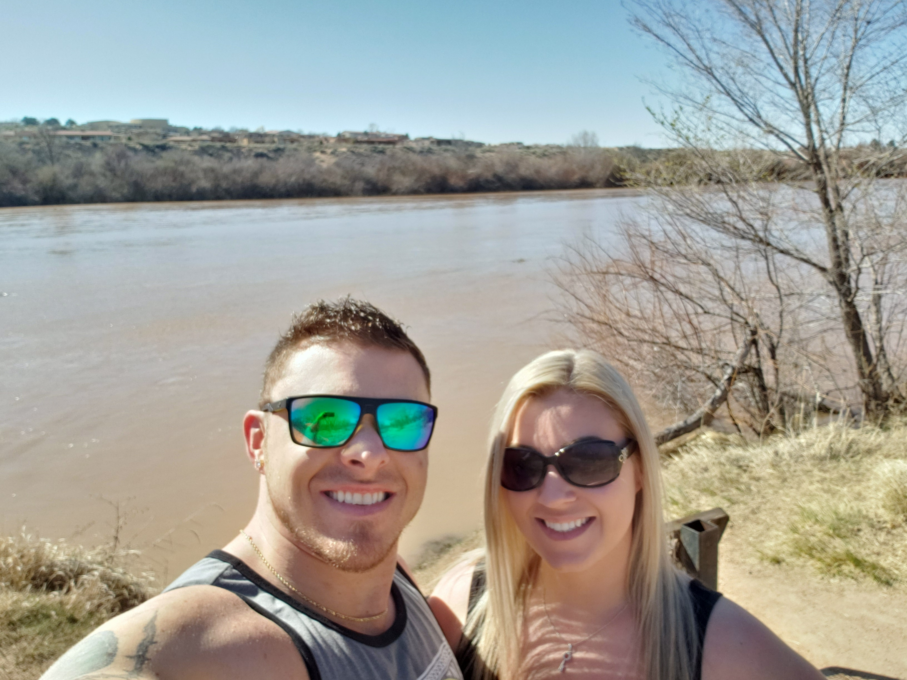
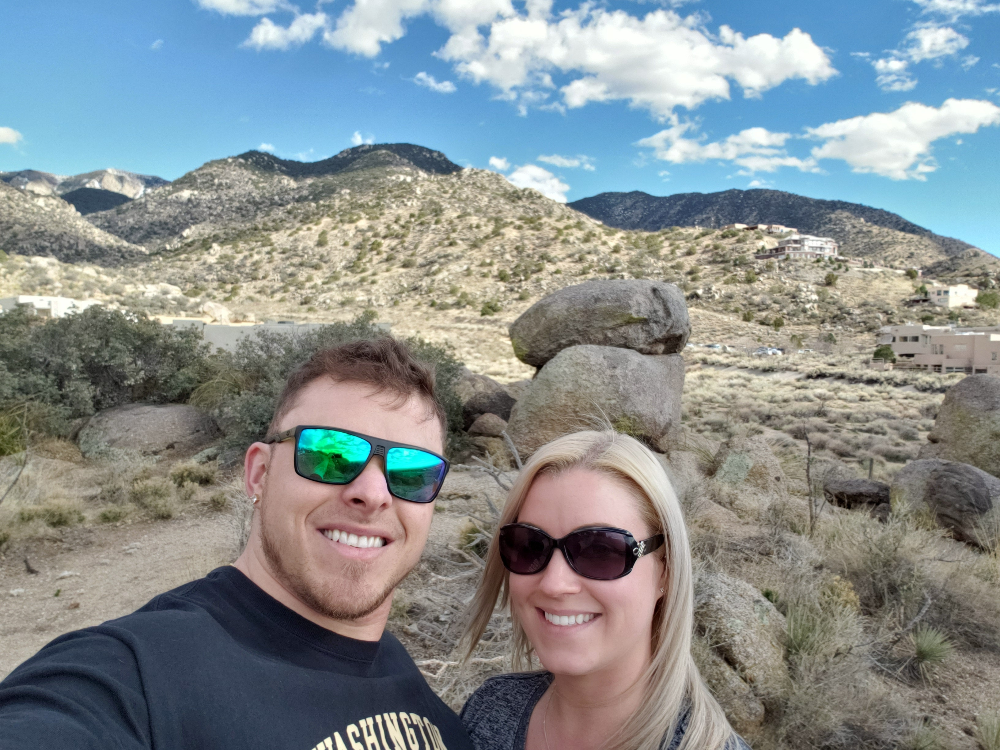
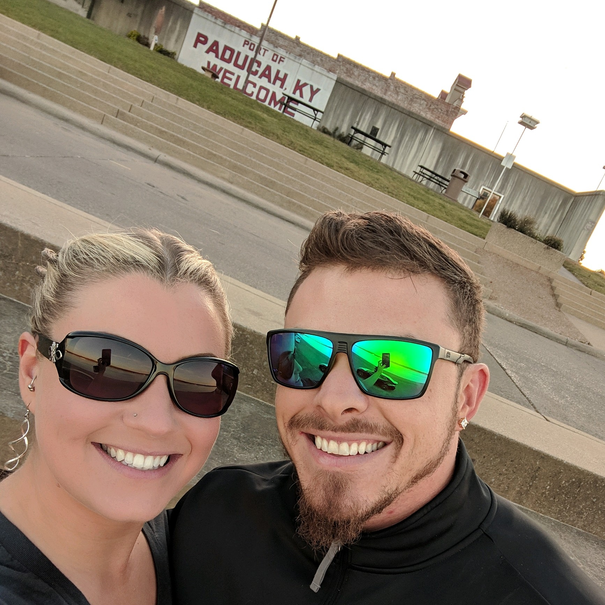
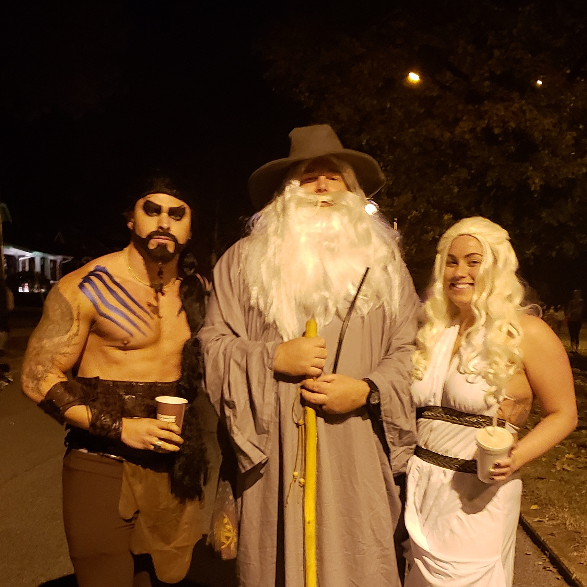

This page is all about what keeps me grounded, mentally and physically. I like to lift weights, fish, and drive my custom car around town. When I can afford it, i'll take a Vacation somewhere with my girlfriend.
This is a way for me to connect with my physical strength. I love the gym because it's a hobby that people can tell just by looking at you. Usually, you get instant respect from other people because of the dedication people know it takes to achieve. It's a way for me to constantly test myself and learn what is really capable from my body.
I love fishing because it's very relaxing, up until the point that you hook a fish.
I like going to Les Davis
Pier over off of Ruston Way in Tacoma. I use a medium-heavy
pole with 300LB braided line and use a dogfish as
bait for big sharks.
It's both terrifying, and exciting, knowing that a one hundred fifty pound shark is just at the end of your line!
My first car was a 1987 Acura Legend when I was 17 years old. Ever since I got my first car, i've always been modifying my cars. I usually go through a whole process when I buy a car and if needed, I replace regular maintenance items and then move to the engine, transmission and exhaust mounts for stability. After I replace the stock items of the car, i'll put money into the expensive horsepower adding parts, like exhaust and turbos.
I owned a 1994 Acura Legend, 1993 Honda Civic EX, and a 1989 Foxbody Mustang GT. After I joined the Army in 2010 I bought a 2008 Toyota FJ Cruiser and in late 2017 I bought my current 2002 Subaru Impreza WRX.
I joined the Army in 2010 out of Albuquerque, New Mexico. I was honorably discharged from the Army in 2017 and bought
my first home here in Washington State.
My entire time in the Army, i've had to visit New Mexico about once a year because
I no longer live in the state. So about once a year I take a week long vacation back to my home desert of New Mexico.


My girlfriend and I are planning a 3 day trip to tripadvisors number one rated beach in the United States, Clearwater Beach,
Florida.
We will get there June 20th, 2019 and are staying on a hotel on the beach with my girlfriend's best friend and boyfriend. It's
going to be a great fun filled weekend in the sun!
My girlfriend grew up in Paducah, Kentucky and is similar to me, in that, she lives away from her home state.
Her mom, and brothers moved to Gig Harbor, Washington from Paducah in 2015 which is the same year I met her, except one of her brothers, Brenton.
So every year she chooses to visit her Brother Brenton for Halloween in Paducah, Kentucky. Last year I went with her and it was a great time.
We stayed at her brother Brenton's house with her sister in law. 

There is a street named Jefferson street in Paducah which is where the entire town of Paducah comes to trick-or-treat dressed up in their
costumes and it's the entire town, so there is thousands of people on this one street, it's really something special.